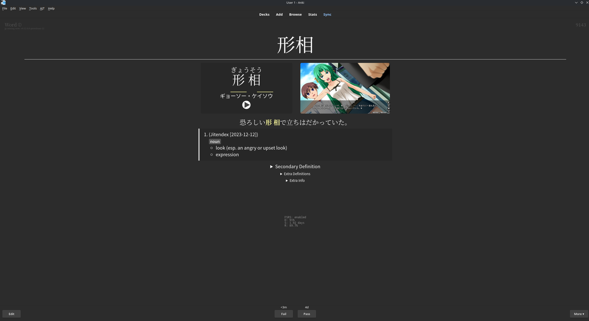

Anki
Anki on flashcard ohjelma joka tulee olemaan runkosi sanaston opiskeluun alussa, se toimii hyvin yksinkertaisesti, sinulla on pakka sanoja ja sinun pitää muistaa miten ne luetaan ja mitä ne tarkoittavat.
Jos muistat painat hyvää ja jos et niin painat huonoa.
Anki on hyvin käytetty ohjelma ei vain kielien opiskelussa mutta myös lääketieteentermien yms opiskelussa.
https://apps.ankiweb.net/